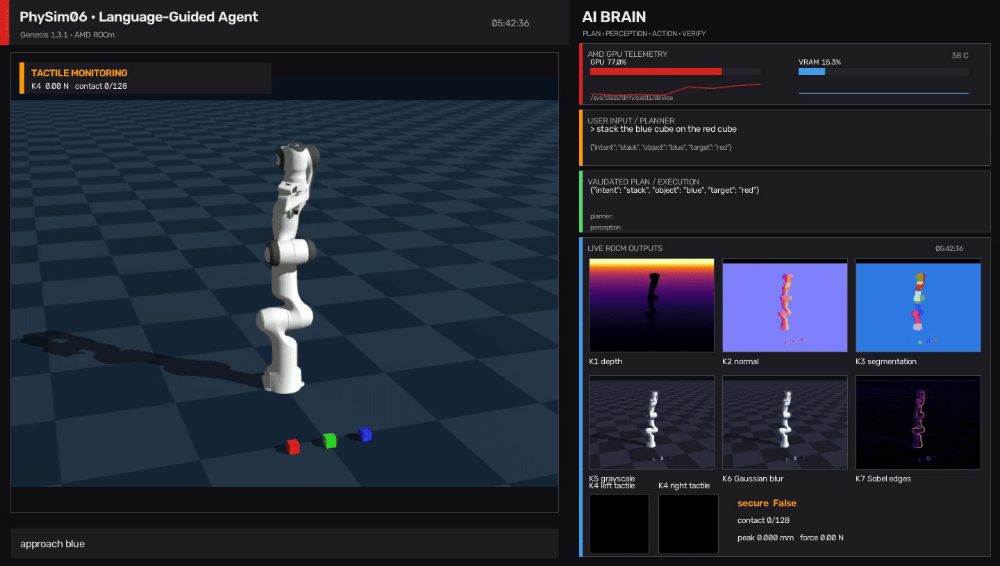
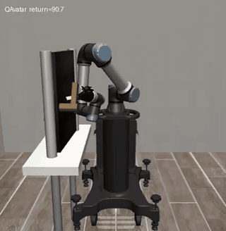
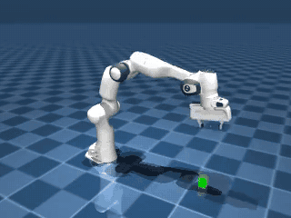
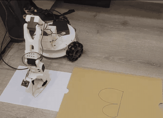
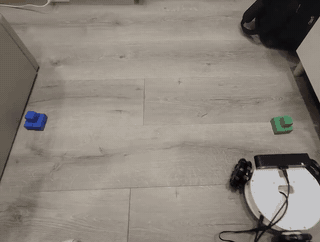

AUP Teaching Labs
Hands-on Modern AI and Physical AI courses accelerated by AMD GPUs.
Build virtual robots, scale experiments across the GPU, train intelligent policies, and deploy them on physical hardware. The same catalog also takes learners from computer vision and deep-learning foundations to a Tiny LLaMA built from scratch.
Physical AI
Follow a complete path from simulation and policy learning to real robot manipulation and autonomous navigation.

Advance from robot control and parallel simulation to ROCm vision, tactile perception, and a guarded language-guided agent with an interactive live HUD.

Move from scripted robot control to imitation learning, vision-language-action policies, PPO, and cross-domain reinforcement learning.

Learn robot simulation with MuJoCo and scale it with JAX, MJX, vectorized rollouts, domain randomization, and Playground PPO.

Collect demonstrations on a real SO-101 arm and turn them into deployable ACT and SmolVLA policies.

Deploy perception, mapping, and autonomous navigation on a real LeKiwi robot using an AMD-only ROCm and ROS2 stack.
Explore the complete Physical AI pathway →
More AI Courses
Strengthen the perception, modeling, and language foundations behind modern intelligent systems.

Classification and ResNet, detection, segmentation and SAM, tracking, VAE, and diffusion models.

Classical machine learning through neural networks, CNNs, Word2Vec, autoencoders, GANs, and Transformers.

Autograd and transformer internals through FlashAttention, MoE, LoRA, training, KV cache, and Tiny LLaMA.
Start Learning
Run the notebooks locally with their provided environments. Selected courses also integrate with AUP Learning Cloud for pre-built ROCm-accelerated Jupyter environments.
Acknowledgments
AUP thanks the university partners and open-source communities that make these courses possible.
| University | Professors and Labs | Course Contributions |
|---|---|---|
| National Taiwan University | Prof. Chun-Yi Lee, ELSA Lab | DL, CV |
| Nanjing University | Prof. Jingwei Xu, NJUDeepEngine | LLM |
| National Yang Ming Chiao Tung University | Prof. Ping-Chun Hsieh, Reinforcement Learning and Bandits Lab | Physical AI, Reinforcement Learning on MuJoCo |